Analysis Data Reviewer’s Guide
R Consortium
R Submission Pilot 3
ADRG Template Version 2019-07-18
1 Introduction
1.1 Purpose
This document provides context for the analysis datasets and terminology that benefit from additional explanation beyond the Data Definition document (define.xml). In addition, this document provides a summary of ADaM conformance findings.
1.2 Study Data Standards and Dictionary Inventory
| Standard or Dictionary | Versions Used |
|---|---|
| SDTM | SDTM Implementation Guide Version 3.1.2 |
| SDTM Version 1.2 | |
| SDTM Controlled Terminology | CDISC SDTM Controlled Terminology, 2022-12-16 |
| ADaM | ADaM-IG v1.1 |
| ADaM v2.1 | |
| ADaM Controlled Terminology | CDISC ADaM Controlled Terminology, 2022-06-24 |
| Data Definitions | Define-XML v2.0 |
| Medical Events Dictionary | MedDRA version 8.0 |
1.3 Source Data Used for Analysis Dataset Creation
The ADaM datasets were derived from SDTM version 1.2. For traceability, the SDTM is publicly available at the PHUSE Github Repository.
Which can be traced back to the original CDISC SDTM & ADaM Pilot Project.
2 Protocol Description
2.1 Protocol Number and Title
- Protocol Number: CDISCPilot1
- Protocol Title: Safety and Efficacy of the Xanomeline Transdermal Therapeutic System (TTS) in Patients with Mild to Moderate Alzheimer’s Disease
The reference documents can be found here.
2.2 Protocol Design in Relation to ADaM Concepts
2.2.1 Objectives:
The objectives of the study were to evaluate the efficacy and safety of transdermal xanomeline, 50cm2 and 75cm2, and placebo in subjects with mild to moderate Alzheimer’s disease.
2.2.2 Methodology:
This was a prospective, randomized, multi-center, double-blind, placebo-controlled, parallel-group study. Subjects were randomized equally to placebo, xanomeline low dose, or xanomeline high dose. Subjects applied 2 patches daily and were followed for a total of 26 weeks.
2.2.3 Number of Subjects Planned:
300 subjects total (100 subjects in each of 3 groups)
2.2.4 Study schema:
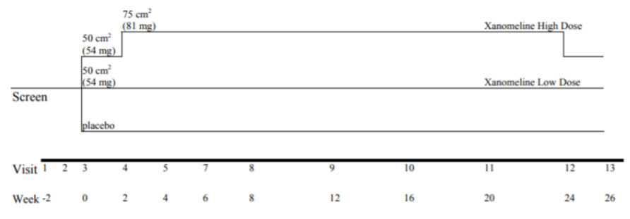
4 Analysis Data Creation and Processing Issues
4.1 Split Datasets
There were no datasets that required splitting due to size constraints.
4.2 Data Dependencies
| Analysis Dataset | Dependent on Following Analysis Datasets |
|---|---|
| ADAE | ADSL |
| ADTTE | ADSL, ADAE |
| ADADAS | ADSL |
| ADLBC | ADSL |
4.3 Intermediate Datasets
No intermediate datasets were created for this trial.
5 Analysis Dataset Descriptions
5.1 Overview
The following provides detailed information for each analysis dataset included in the Pilot 3 submission, which were used to generate the outputs in Pilot 1. These ADaM datasets are ADSL, ADAE, ADTTE, ADADAS, ADLBC.
5.2 Analysis Datasets
Dataset - Dataset Label |
Class | Efficacy | Safety | Baseline or other subject characteristics |
Primary Objective |
Structure |
|---|---|---|---|---|---|---|
| ADSL - Subject-Level Analysis Dataset | SUBJECT LEVEL ANALYSIS DATASET | x | One record per subject | |||
| ADADAS - ADAS-COG Analysis Dataset | BASIC DATA STRUCTURE | x | x | One or more records per subject per analysis parameter per analysis timepoint | ||
| ADAE - Adverse Events Analysis Dataset | OCCURRENCE DATA STRUCTURE | x | One record per subject per adverse event | |||
| ADLBC - Analysis Dataset Lab Blood Chemistry | BASIC DATA STRUCTURE | x | One or more records per subject per analysis parameter per analysis timepoint | |||
| ADTTE - AE Time To 1st Derm. Event Analysis | BASIC DATA STRUCTURE | x | x | One or more records per subject per analysis parameter per analysis timepoint |
5.2.1 ADSL - Subject-Level Analysis Dataset
The subject level analysis dataset (ADSL) contains required variables for demographics, treatment groups, and population flags. In addition, it contains other baseline characteristics that were used in both safety and efficacy analyses. All patients in DM were included in ADSL. The following are the key population flags are used in analyses for patients:
SAFFL – Safety Population Flag (all patients having received any study treatment)
ITTFL – Intent-to-Treat Population Flag (all randomized patients)
5.2.2 ADADAS - ADAS-COG Analysis Dataset
ADADAS contains analysis data from the ADAS-Cog questionnaire, one of the primary efficacy endpoints. It contains one record per subject per parameter (ADAS-Cog questionnaire item) per VISIT. Visits are placed into analysis visits (represented by AVISIT and AVISITN) based on the date of the visit and the visit windows.
5.2.3 ADAE - Adverse Events Analysis Dataset
ADAE contains one record per reported event per subject. Subjects who did not report any Adverse Events are not represented in this dataset. The data reference for ADAE is the SDTM AE (Adverse Events) domain and there is a 1-1 correspondence between records in the source and this analysis dataset. These records can be linked uniquely by STUDYID, USUBJID, and AESEQ. Events of particular interest (dermatologic) are captured in the customized query variable (CQ01NAM) in this dataset. Since ADAE is a source for ADTTE, the first chronological occurrence based on the start dates (and sequence numbers) of the treatment emergent dermatological events are flagged (AOCC01FL) to facilitate traceability between these two analysis datasets.
5.2.4 ADLBC - Analysis Dataset Lab Blood Chemistry
ADLBC contains one record per lab analysis parameter, per time point, per subject. ADLBC contains lab chemistry parameters and these data are derived from the SDTM LB (Laboratory Tests) domain. Two sets of lab parameters exist in ADLBC. One set contains the standardised lab value from the LB domain and the second set contains change from previous visit relative to normal range values. In some of the summaries the derived end-of-treatment visit (AVISITN=99) is also presented.
5.2.5 ADTTE - AE Time To 1st Derm. Event Analysis
ADTTE contains one observation per parameter per subject. ADTTE is specifically for safety analyses of the time to the first dermatologic adverse event. Dermatologic AEs are considered an adverse event of special interest. The key parameter used for the analysis of time to the first dermatological event is with PARAMCD of “TTDE”.
6 Data Conformance Summary
6.1 Conformance Inputs
Were the analysis datasets evaluated for conformance with CDISC ADaM Validation Checks?
Yes, Version of CDISC ADaM Validation Checks and software used: Pinnacle 21®
Community 4.0.2Were the ADaM datasets evaluated in relation to define.xml?
YesWas define.xml evaluated?
Yes 6.2 Issues Summary
| Check ID | Diagnostic Message | Dataset | Count (Issue Rate) | Explanation |
|---|---|---|---|---|
| AD1012 | Secondary custom variable is present but its primary variable is not present | ADSL | 1 (50.00%) | This is a Sponsor Extension to the ADaM Model. The VISNUMEN [End of Trt Visit (Vis 12 or Early Term.)] variable is a integer variable which is not related to any character variable. |
6.3 QC Findings and Common Issues
In this Pilot 3 study, our focus was to create a subset of ADaMs based on the CDSICPILOT data, using R. We compared our R generated ADaMs against the CDISCPILOT ADaMs, created in SAS, as a QC step. With these comparisons we listed the QC Findings with explanations as to why these findings exist. We also came across common issues throughout the ADaM generation process, which could be helpful for improvements utilising the CDISC Pilot data in the future. More details can be found in the appendix (Appendix 2 and Appendix 3).
7 Submission of Programs
7.1 Description
The sponsor has provided all programs for analysis results. They are all created on a Linux platform using R version 4.2.3.
7.2 ADaM Programs
The following table contains the list of programs that generate the analysis datasets in Pilot 3. It shows the program file name, the analysis dataset name and the label of the analysis dataset. The recommended steps to execute the analysis results using R are described in the Appendix.
| Program Name | Analysis Dataset Name | Analysis Dataset Label |
|---|---|---|
| adsl.r | adsl.xpt | Subject-Level Analysis Dataset |
| adadas.r | adas.xpt | ADAS-Cog Analysis |
| adlbc.r | adlb.xpt | Analysis Dataset Lab Blood Chemistry |
| adae.r | adae.xpt | Adverse Events Analysis Dataset |
| adtte.r | adtte.xpt | AE Time to 1st Derm. Event Analysis |
7.3 Analysis Output Programs
The following table contains a list of programs that generate outputs used in the R consortium R submission Pilot 1. These outputs were rerun in Pilot 3 using the analysis datasets generated by the ADaM programs. It shows the program file names, the related outputs, the input datasets and variables used, and any data selection criteria that need to be applied per Pilot 1.
Program Name |
Output Name |
Analysis Datasets & Variables | Selection Criteria |
|---|---|---|---|
| tlf-demographic.r | tlf-demographic-pilot3.out | ADSL.STUDYID ADSL.TRT01P ADSL.ITTFL ADSL.AGE ADSL.AGEGR1 ADSL.RACE ADSL.HEIGHTBL ADSL.WEIGHTBL ADSL.BMIBL ADSL.MMSETOT | STUDYID== “CDISCPILOT01” Population: ADSL.ITTFL == “Y” Treatment Groups: ADSL.TRT01P Placebo Xanomeline Low Dose Xanomeline High Dose |
| tlf-primary.r | tlf-primary-pilot3.rtf | ADSL.TRT01P ADSL.USUBJID ADSL.EFFFL ADSL.ITTFL ADADAS.TRTP ADADAS.TRTPCD ADADAS.EFFFL ADADAS.ITTFL ADADAS.PARAMCD ADADAS.ANL01FL ADADAS.AVISIT ADADAS.AVISITN ADADAS.AVAL ADADAS.CHG |
STUDYID== “CDISCPILOT01” Population: ADADAS.EFFFL == “Y” ADADAS.ITTFL == “Y” ADADAS.ANL01FL == “Y”
Treatment Groups: ADSL.TRTP Placebo Xanomeline Low Dose Xanomeline High Dose Parameters: ADADAS.PARAMCD == “ACTOT |
tlf-efficacy.r |
tlf-efficacy-pilot3.rtf | ADSL.STUDYID ADSL.USUBJID ADSL.ITTFL ADLBC.TRTP ADLBC.TRTPN ADLBC.PARAMCD ADLBC.AVISITN ADLBC.BASE ADLBC.AVAL ADLBC.CHG | STUDYID== “CDISCPILOT01” Population: ADSL.ITTFL == “Y” & ADLBC.TRTPN in (0, 81) & ADLBC.PARAMCD == “GLUC” & ADLBC.AVISITN is not missing
Treatment Groups: ADLBC.TRTPN Placebo Xanomeline High Dose |
| tlf-kmplot.r | tlf.kmplot-pilot3.pdf | ADSL.STUDYID ADSL.USUBJID ADSL.SAFFL ADSL.TRT01A ADTTE.STUDYID ADTTE.USUBJID ADTTE.PARAMCD ADTTE.AVAL ADTTE.CNSR | STUDYID== “CDISCPILOT01” Population: ADSL.SAFFL == “Y” Treatment Groups: ADSL.TRT01A Placebo Xanomeline Low Dose Xanomeline High Dose Parameters: ADTTE.PARAMCD == “TTDE” |
For reference, below is a description of the analysis programs utilized and outputs generated in Pilot 1.
| Program Name | Output Table Number | Title |
|---|---|---|
| tlf-demographic.r | Table 14-2.01 | Summary of Demographic and Baseline Characteristics |
| tlf-primary.r | Table 14-3.01 | Primary Endpoint Analysis: ADAS Cog (11) - Change from Baseline to Week 24 - LOCF |
| tlf-efficacy.r | Table 14-3.02 | ANCOVA of Change from Baseline at Week 20 |
| tlf-kmplot.r | Figure 14-1 | KM plot for Time to First Dermatologic Event: Safety population |
7.4 Proprietary R Packages
| R Package | Package version | Package Description |
| pilot3utils | 0.0.2 | The objective of this utility package is to support the R Consortium R submission Pilot 3 Project. It contains all utility functions that were used in the generation of the deliverables: formatting of ADaM variables and analysis results summarize mixed model analysis formatting of layouts |
7.5 Open-source R Analysis Packages
| R Package | Package version | Package Description |
| admiral | 0.10.1 | A toolbox for programming Clinical Data Interchange Standards Consortium (CDISC) compliant Analysis Data Model (ADaM) datasets in R. ADaM datasets are a mandatory part of any New Drug or Biologics License Application submitted to the United States Food and Drug Administration (FDA). Analysis derivations are implemented in accordance with the “Analysis Data Model Implementation Guide” (CDISC Analysis Data Model Team, 2021, https://www.cdisc.org/standards/ foundational/adam/adamig-v1-3-release-package). |
| cowplot | 1.1.1 | Provides various features that help with creating publication-quality figures with ‘ggplot2’, such as a set of themes, functions to align plots and arrange them into complex compound figures, and functions that make it easy to annotate plots and or mix plots with images. The package was originally written for internal use in the Wilke lab, hence the name (Claus O. Wilke’s plot package). It has also been used extensively in the book Fundamentals of Data Visualization. |
| diffdf | 1.0.4 | Functions for comparing two data.frames against each other. The core functionality is to provide a detailed breakdown of any differences between two data.frames as well as providing utility functions to help narrow down the source of problems and differences. |
| dplyr | 1.1.0 | A fast, consistent tool for working with data frame like objects, both in memory and out of memory. |
| emmeans | 1.8.5 | Obtain estimated marginal means (EMMs) for many linear, generalized linear, and mixed models. Compute contrasts or linear functions of EMMs, trends, and comparisons of slopes. Plots and other displays. Least-squares means are discussed, and the term “estimated marginal means” is suggested, in Searle, Speed, and Milliken (1980) Population marginal means in the linear model: An alternative to least squares means, The American Statistician 34(4), 216-221 <doi:10.1080/00031305.1980.10483031>. |
| ggplot2 | 3.4.1 | A system for ‘declaratively’ creating graphics, based on “The Grammar of Graphics”. You provide the data, tell ‘ggplot2’ how to map variables to aesthetics, what graphical primitives to use, and it takes care of the details. |
| haven | 2.5.2 | Import foreign statistical formats into R via the embedded ‘ReadStat’ C library, <https://github.com/WizardMac/ReadStat>. |
| lubridate | 1.9.2 | Functions to work with date-times and time-spans: fast and user friendly parsing of date-time data, extraction and updating of components of a date-time (years, months, days, hours, minutes, and seconds), algebraic manipulation on date-time and time-span objects. The ‘lubridate’ package has a consistent and memorable syntax that makes working with dates easy and fun. |
| metacore | 0.1.2 | Create an immutable container holding metadata for the purpose of better enabling programming activities and functionality of other packages within the clinical programming workflow. |
| metatools | 0.1.5 | Uses the metadata information stored in ‘metacore’ objects to check and build metadata associated columns. |
| pharmaRTF | 0.1.4 | Enhanced RTF wrapper written in R for use with existing R tables packages such as ‘Huxtable’ or ‘GT’. This package fills a gap where tables in certain packages can be written out to RTF, but cannot add certain metadata or features to the document that are required/expected in a report for a regulatory submission, such as multiple levels of titles and footnotes, making the document landscape, and controlling properties such as margins. |
| r2rtf | 1.0.1 | Create production-ready Rich Text Format (RTF) table and figure with flexible format. |
| rtables | 0.6.0 | Reporting tables often have structure that goes beyond simple rectangular data. The ‘rtables’ package provides a framework for declaring complex multi-level tabulations and then applying them to data. This framework models both tabulation and the resulting tables as hierarchical, tree-like objects which support sibling sub-tables, arbitrary splitting or grouping of data in row and column dimensions, cells containing multiple values, and the concept of contextual summary computations. A convenient pipe-able interface is provided for declaring table layouts and the corresponding computations, and then applying them to data. |
| stringr | 1.5.0 | A consistent, simple and easy to use set of wrappers around the fantastic ‘stringi’ package. All function and argument names (and positions) are consistent, all functions deal with “NA”’s and zero length vectors in the same way, and the output from one function is easy to feed into the input of another. |
| tidyr | 1.3.0 | Tools to help to create tidy data, where each column is a variable, each row is an observation, and each cell contains a single value. ‘tidyr’ contains tools for changing the shape (pivoting) and hierarchy (nesting and ‘unnesting’) of a dataset, turning deeply nested lists into rectangular data frames (‘rectangling’), and extracting values out of string columns. It also includes tools for working with missing values (both implicit and explicit). |
| Tplyr | 1.1.0 | A traceability focused tool created to simplify the data manipulation necessary to create clinical summaries. |
| visR | 0.3.1 | To enable fit-for-purpose, reusable clinical and medical research focused visualizations and tables with sensible defaults and based on graphical principles as described in: “Vandemeulebroecke et al. (2018)” <doi:10.1002/pst.1912>, “Vandemeulebroecke et al. (2019)” <doi:10.1002/psp4.12455>, and “Morris et al. (2019)” <doi:10.1136/bmjopen-2019-030215>. |
| xportr | 0.2.0 | Tools to build CDISC compliant data sets and check for CDISC compliance. |
8 Directory Structure
m1
└── cover-letter.pdf
└── report-tlf-pilot3.pdf
└── response-FDA-IR-pilot3.pdf
m5
└── sap-cdiscpilot01.pdf
└── datasets
└── rconsortiumpilot3
├── tabulations
| ├── sdtm
| │ ├── blankcrf.pdf
| │ ├── define-v1-updated-html.xsl
| │ ├── define.pdf
| │ ├── define.xml
| │ ├── ae.xpt # SDTM datasets in XPT format
| │ ├── cm.xpt
| │ ├── dm.xpt
| │ ├── ds.xpt
| │ ├── ex.xpt
| │ ├── lb.xpt
| │ ├── mh.xpt
| │ ├── qs.xpt
| │ ├── relrec.xpt
| │ ├── sc.xpt
| │ ├── se.xpt
| │ ├── suppae.xpt
| │ ├── suppdm.xpt
| │ ├── suppds.xpt
| │ ├── supplb.xpt
| │ ├── sv.xpt
| │ ├── ta.xpt
| │ ├── te.xpt
| │ ├── ti.xpt
| │ ├── ts.xpt
| │ ├── tv.xpt
| │ └── vs.xpt
└── analysis
| ├── adam
| │ ├── programs
| │ │ ├── adadas.r
| │ │ ├── adae.r
| │ │ ├── adlbc.r
| │ │ ├── adsl.r
| │ │ ├── adtte.r
| │ │ ├── tlf-demographic.r
| │ │ ├── tlf-efficacy.r
| │ │ ├── tlf-kmplot.r
| │ │ ├── tlf-primary.r
| │ │ └── renv.lock
| │ ├── datasets
| │ │ ├── adrg.pdf
| │ │ ├── adam-pilot-3.xlsx
| │ │ ├── define.xml
| │ │ ├── adadas.xpt
| │ │ ├── adae.xpt
| │ │ ├── adlbc.xpt
| │ │ ├── adsl.xpt
| │ │ ├── adtte.xpt
| │ │ ├── define2-0-0.xsl
9 Appendix
9.1 Appendix 1 : Pilot 3 Installation and Usage
To install and execute the R programs, follow all of the procedures below. Ensure that you note the location of where you downloaded the Pilot 3 eCTD submission files. For demonstration purposes, the procedures below assume the transfer has been saved to this location: C:\pilot3.
In addition, create a new directory to hold the unpacked Pilot 3 ADaM and tlf programs and files. For demonstration purposes, the procedures below assume the new directory is this location: C:\pilot3-files, where the unpacked files are shown as the m1 and m5 directories.
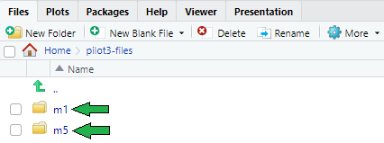
9.1.1 Installation of R and R Studio
Download and install R 4.2.3 for Windows from https://cran.r-project.org/bin/windows/base/old/4.2.3/. Then download and run the R-4.2.3-win.exe file. Also download RStudio for Windows by visiting https://dailies.rstudio.com/version/2023.03.1+446.pro1/
9.1.2 Create a new R Studio project within the pilot3-files directory
Open R Studio
Select File -> New Project
In the Create Project dialog box, choose Existing Directory
In the Create Project from Existing Directory dialog box, click the Browse button and navigate to the C:\pilot3-files directory.
Once the location has been confirmed, click the Create Project button.
These .Rproj files will be created.
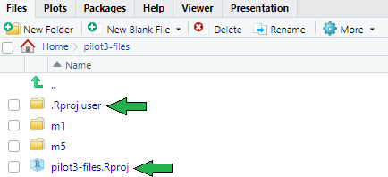
It is possible that the .Rproj.user folder may not have generated for you or or may not be visible as it is a hidden folder. If so, this is fine as it will not be necessary in order to run the analysis programs below.
9.1.3 Installation of R Packages
A minimum set of R packages are required to ensure the Pilot 3 analysis programs are successfully run and the custom package environment used for the application is replicated correctly. Please follow these steps below to install these R packages.
In the
Fileswindow pane, ensure that this directory~/pilot3-files/m5/datasets/rconsortiumpilot3/analysis/adam/programshas both the
renv-lock.txtandpilot3utils_0.0.2.zipfiles.
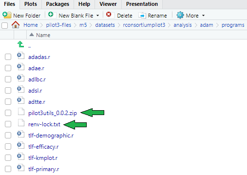
- In the R Studio console install the {remotes} package:
install.packages("remotes")The console may display a warning message about Rtools being required to build R packages. However the Rtools utility is not required to run the programs in this pilot 3 study.
If you receive a warning showing “cannot open URL https://cran.rstudio.com/src/contrib/PACKAGES‘“, this is due to the default R Studio option ’Use secure download method for HTTP’. In R Studio, go to Tools → Global Options → Packages, then uncheck the ‘Use secure download method for HTTP’ option, then retry installation.
- Then, install the {renv} package, version 0.17.0:
remotes::install_version("renv", version = "0.17.0")If not already set, please verify that the working directory is already set to the project folder.
getwd()If not pointing to root project directory then do :
setwd("~/pilot3-files")
- Move the ‘renv-lock.txt’ to the root project directory and rename to ‘renv.lock’ :
./pilot3-files/m5/datasets/rconsortiumpilot3/analysis/adam/programs/renv-lock.txt
--> ./pilot3-files/renv.lock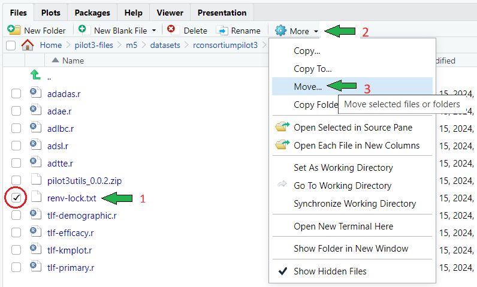
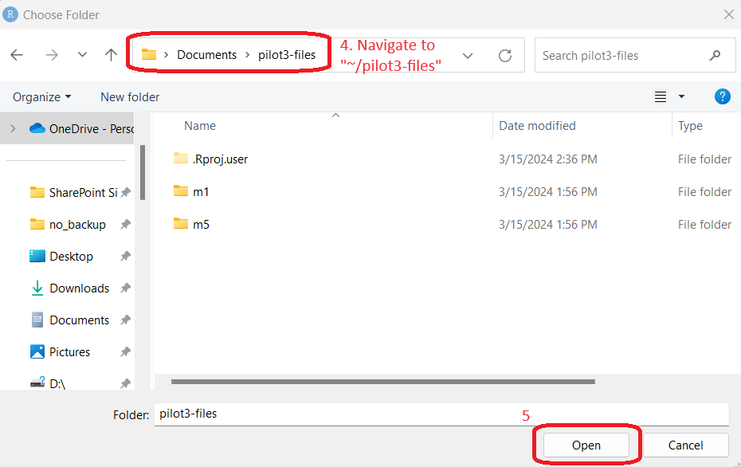
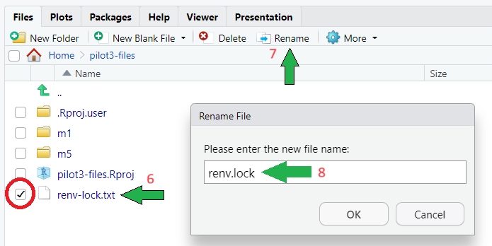
Restart the R Session.
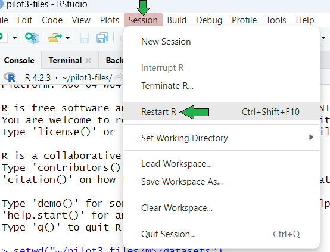
Run the code below, then select option 1 :
renv::init()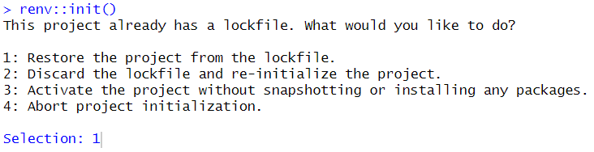
- If using
{renv}for the first time, you may get a ‘Welcome’ message describing the renv folder structure and its components. It will also list the packages that will be installed from therenv.lockfile. At the end it will ask you if you want to proceed. Select ‘y’.
Do you want to proceed? [y/N]: y
- If after selecting option 1, you may receive a warning such as :
Warning: error downloading
'https://packagemanager.posit.co/cran/2023-03-15/bin/windows/contrib/4.2/
PACKAGES.rds'
['CreateProcess' failed to run 'C:\WINDOWS\SYSTEM32\curl.exe --config
"C:\Users\laxamanj\AppData\Local\Temp\RtmpQrN0y7\renv-download-config-
2e24149c3b5f"']- If so, then run again selecting option 3 instead :
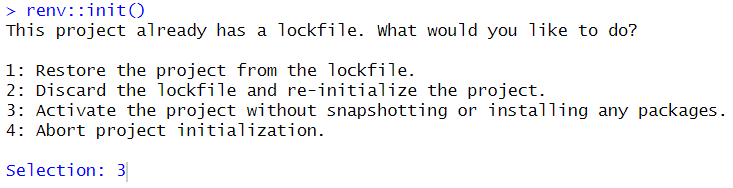
- This warning will show, which can be ignored :
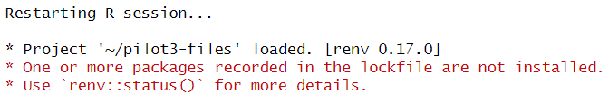
Open the .Rprofile : C:/pilot3-files/.Rprofile and ensure these 2 lines are there :
Sys.setenv(RENV_DOWNLOAD_FILE_METHOD = "libcurl") source("renv/activate.R")e.g.,
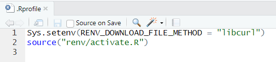
- Restart the R Session (ignoring the warning once more), then run
renv::restore()and selecty:
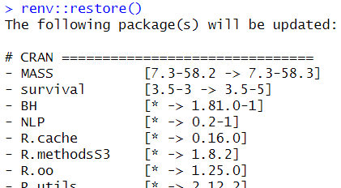
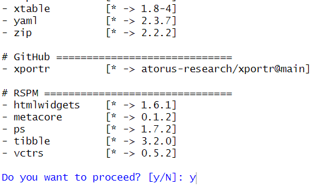
The package installation procedure may take a few minutes or longer depending on internet bandwidth.
- Upon completion of installing packages using
{renv}, please restart your R session.
After restarting the R session at this stage, running renv::status() will show us that the only package uninstalled is the {pilot3utils} package.
The following package(s) are used in this project, but are not installed:
pilot3utils
Consider installing these packages (for example, using `renv::install()`).
Then, use `renv::snapshot()` to record these packages in the lockfile.
Use `renv::dependencies()` to see where these packages appear to be used.We may ignore this as we will be installing the {pilot3utils} package in the following steps.
Install the {pilot3utils} package following the steps below :
- In R Studio, navigate to your
Packageswindow pane, then click onInstall.
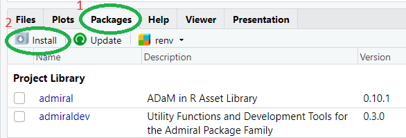
- A new window called
Install Packageswill show up.
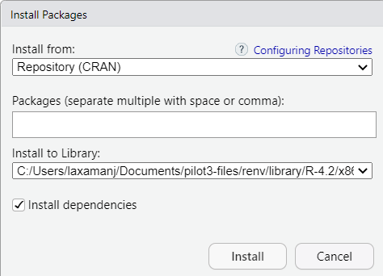
- In the field
Install from:, click on the drop-down menu and selectPackage Archive File (.zip; .tar.gz)
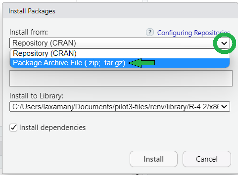
- In R Studio, navigate to your
This drop-down option is only available on a local Windows installation, not on linux systems.
- In the field
Package Archive, click onBrowse...and navigate to this directory to point to the{pilot3utils}package :
~/pilot3-files/m5/datasets/rconsortiumpilot3/analysis/adam/programs/pilot3utils_0.0.2.zip
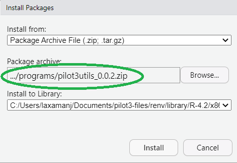
In the field
Install to Library:, you may keep this at its default setting.Click
Install.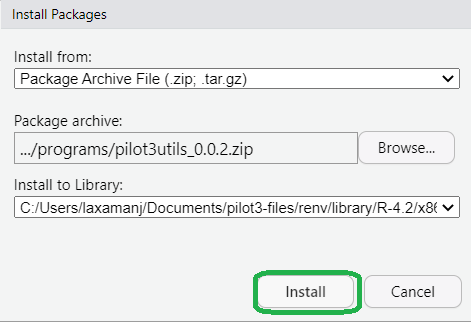
- Set the paths to run the analysis programs
INPUT path: to rerun the analysis programs, define the path variable
Path for SDTM data: path$sdtm
Path to ADaM specifications : path$adam
OUTPUT path: to save the analysis datasets and results, define the path variable
Path for ADaM data: path$adam
Path for output TLFs: path$output.
All these paths must be defined before executing the analysis programs. You may do so by first entering the full file path directories to where the SDTM is currently stored and where the ADaMs and Outputs will be generated upon execution of the analysis programs.
Before executing the example file paths below, first navigate to the ~/pilot3-files/m5/datasets/rconsortiumpilot3/analysis folder and do this :
- Create a copy of the
adamfolder in the same location and rename the new folder copy asadam-reviewer. The reason for creating thisadam-reviewerfolder (e.g ../adam-reviewer) is to keep the original ADaM datasets generated by the sponsor (e.g ../adam) so they will not get overwritten upon reviewers’ execution of the analysis programs.
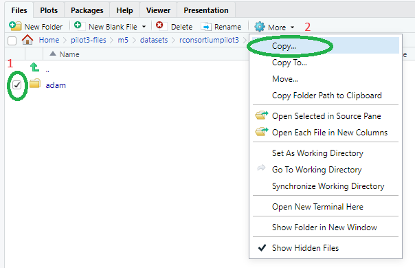
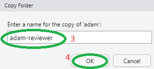
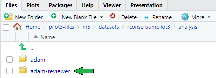
- In the same location create a new folder called
outputin order to write the outputs in this folder upon reviewers’ execution of the analysis output programs.
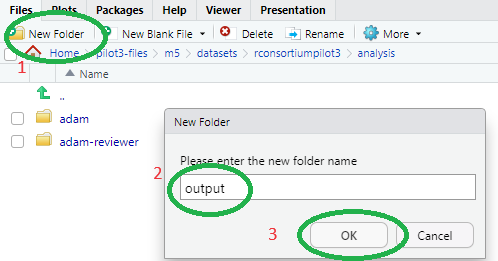
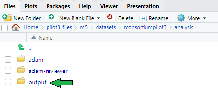
# Modify path to the sdtm, adam and output location
# Output saved in current folder
path <- list(
sdtm = "Enter full file path to the sdtm data here",
adam = "Enter full file path to where adam data will be written and
sourced here",
output = "Enter full file path to where outputs should be saved here"
)
# For example
path <- list(
sdtm = "~/pilot3-files/m5/datasets/rconsortiumpilot3/tabulations/sdtm",
adam = "~/pilot3-files/m5/datasets/rconsortiumpilot3/analysis/
adam-reviewer/datasets",
output = "~/pilot3-files/m5/datasets/rconsortiumpilot3/analysis/output"
)- Execute analysis program
To reproduce analysis results, rerun the following programs in the order below from ~/pilot3-files/m5/datasets/rconsortiumpilot3/analysis/adam-reviewer/programs :
“adsl.r”
“adae.r”
“adadas.r”
“adlbc.r”
“adtte.r”
“tlf-demographic.r”
“tlf-efficacy.r”
“tlf-kmplot.r”
“tlf-primary.r”
9.2 Appendix 2 : QC Findings
9.2.1 ADSL
The R-generated ADSL matches the original ADSL from CDISC pilot data, besides the following mismatches:
- Subject 01-702-1082 has a missing value for BMIBLGR1 in the R-generated ADSL, whilst BMIBLGR1 = “<25” in the original ADSL. This is an issue with the original ADSL, as this subject’s BMI at baseline (BMIBL) is missing and therefore the subject shouldn’t be assigned a BMI at baseline group.
9.2.2 ADAE
The R-generated ADAE matches the original ADAE from CDISC pilot data, besides the following mismatches: There is an issue with the original CDISC pilot dataset. ADURN is blank, where AESEQ is (5, 6, 7, 8) for the original CDISC dataset for Subject below:
> adae_orig %>%
filter(USUBJID=='01-716-1418') %>%
select(USUBJID,TRTSDT,ASTDT,AENDT,ADURN,ADURU,AESEQ)
# A tibble: 10 × 7
USUBJID TRTSDT ASTDT AENDT ADURN ADURU AESEQ
<chr> <date> <date> <date> <dbl> <chr> <dbl>
1 01-716-1418 2013-05-05 2013-05-05 2013-05-07 3 DAY 1
2 01-716-1418 2013-05-05 2013-05-05 NA NA NA 2
3 01-716-1418 2013-05-05 2013-05-05 2013-05-07 3 DAY 3
4 01-716-1418 2013-05-05 2013-05-07 NA NA NA 4
5 01-716-1418 2013-05-05 2013-07-01 2013-09-26 NA NA 5
6 01-716-1418 2013-05-05 2013-07-01 2013-10-04 NA NA 6
7 01-716-1418 2013-05-05 2013-07-01 2013-09-26 NA NA 7
8 01-716-1418 2013-05-05 2013-07-01 2013-10-04 NA NA 8
9 01-716-1418 2013-05-05 2013-09-26 2013-11-11 47 DAY 9
10 01-716-1418 2013-05-05 2013-09-26 2013-11-11 47 DAY 10Because it seems the original SDTM.AE.AESTDTC was missing Day, where it seems the original ADAE derivation for ADURN was probably using this date instead of the imputed date. Because day is missing in AESTDTC, ADURN can’t derive days.
> ae %>% filter(USUBJID=='01-716-1418') %>% select(USUBJID,AESTDTC,AESEQ) %>%
arrange(AESEQ)
# A tibble: 10 × 3
USUBJID AESTDTC AESEQ
<chr> <chr> <dbl>
1 01-716-1418 2013-05-05 1
2 01-716-1418 2013-05-05 2
3 01-716-1418 2013-05-05 3
4 01-716-1418 2013-05-07 4
5 01-716-1418 2013-07 5
6 01-716-1418 2013-07 6
7 01-716-1418 2013-07 7
8 01-716-1418 2013-07 8
9 01-716-1418 2013-09-26 9
10 01-716-1418 2013-09-26 10but the same records, derived in the Pilot 3 dataset do show a calculation since we are using the imputed ASTDT, per the define (ADURN=AENDT-ASTDT+1).
#AE.AESTDTC, converted to a numeric SAS date. Some events with partial dates
#are imputed in a conservative manner. If the day component is missing, a value
#of '01' is used. If both the month and day are missing no imputation is
#performed as these dates clearly indicate a start prior to the beginning of
#treatment. There are no events with completely missing start dates.
> adae0 %>% filter(USUBJID=='01-716-1418') %>%
select(USUBJID,TRTSDT,ASTDT,AESTDTC,AENDT,AEENDY,ADURN,ADURU,AESEQ)
# A tibble: 10 × 9
USUBJID TRTSDT ASTDT AESTDTC AENDT AEENDY ADURN ADURU AESEQ
<chr> <date> <date> <chr> <date> <dbl> <dbl> <chr> <dbl>
1 01-716-1418 2013-05-05 2013-05-05 2013-05-05 2013-05-07 3 3 DAY 1
2 01-716-1418 2013-05-05 2013-05-05 2013-05-05 NA NA NA NA 2
3 01-716-1418 2013-05-05 2013-05-05 2013-05-05 2013-05-07 3 3 DAY 3
4 01-716-1418 2013-05-05 2013-05-07 2013-05-07 NA NA NA NA 4
5 01-716-1418 2013-05-05 2013-07-01 2013-07 2013-10-04 153 96 DAY 6
6 01-716-1418 2013-05-05 2013-07-01 2013-07 2013-10-04 153 96 DAY 8
7 01-716-1418 2013-05-05 2013-07-01 2013-07 2013-09-26 145 88 DAY 5
8 01-716-1418 2013-05-05 2013-07-01 2013-07 2013-09-26 145 88 DAY 7
9 01-716-1418 2013-05-05 2013-09-26 2013-09-26 2013-11-11 191 47 DAY 9
10 01-716-1418 2013-05-05 2013-09-26 2013-09-26 2013-11-11 191 47 DAY 10This latter approach should be the correct approach.
Due to this, we have outlined the expected differences here :
> diffdf(adae, adae_orig, keys = c("STUDYID", "USUBJID", "AESEQ"))
Differences found between the objects!
A summary is given below.
There are columns in BASE and COMPARE with differing attributes !!
All rows are shown in table below- ADURN values will be populated in Pilot 3 (i.e. under
BASE), following the latter derivation approach (i.e. ADURN=AENDT-ASTDT+1) for Subject 01-716-1418 where AESEQ is (5, 6, 7, 8) specified in define.
All rows are shown in table below
===========================================================
VARIABLE STUDYID USUBJID AESEQ BASE COMPARE
-----------------------------------------------------------
ADURN CDISCPILOT01 01-716-1418 5 88 <NA>
ADURN CDISCPILOT01 01-716-1418 6 96 <NA>
ADURN CDISCPILOT01 01-716-1418 7 88 <NA>
ADURN CDISCPILOT01 01-716-1418 8 96 <NA>
------------------------------------------------------------ ADURU should be set to ‘DAYS’ (i.e. under
BASE) instead of ‘DAY’ when ADURN is not missing. Updated in Pilot 3 define.
First 10 of 718 rows are shown in table below
===========================================================
VARIABLE STUDYID USUBJID AESEQ BASE COMPARE
-----------------------------------------------------------
ADURU CDISCPILOT01 01-701-1015 3 DAYS DAY
ADURU CDISCPILOT01 01-701-1023 1 DAYS DAY
ADURU CDISCPILOT01 01-701-1023 4 DAYS DAY
ADURU CDISCPILOT01 01-701-1047 1 DAYS DAY
ADURU CDISCPILOT01 01-701-1047 2 DAYS DAY
ADURU CDISCPILOT01 01-701-1097 2 DAYS DAY
ADURU CDISCPILOT01 01-701-1097 3 DAYS DAY
ADURU CDISCPILOT01 01-701-1097 5 DAYS DAY
ADURU CDISCPILOT01 01-701-1097 6 DAYS DAY
ADURU CDISCPILOT01 01-701-1097 7 DAYS DAY
-----------------------------------------------------------9.2.3 ADLBC
The R-generated ADLBC matches the original ADLBC from CDISC pilot data, besides the following mismatches:
Three variables from R-generated ADLBC have class date while the same variables are numeric in the CDISC ADLBC. We opted to keep the date class in our R-generated ADLB.
> diffdf(adlbc, qc_adlbc, keys = c("STUDYID", "USUBJID", "AVISIT", "LBSEQ"))
Differences found between the objects!
A summary is given below.
There are columns in BASE and COMPARE with different classes !!
All rows are shown in table below
==================================
VARIABLE CLASS.BASE CLASS.COMP
----------------------------------
ADT Date numeric
TRTEDT Date numeric
TRTSDT Date numeric
----------------------------------9.2.4 ADADAS
The R-generated ADADAS matches original ADADAS from CDISC pilot data, except for the records where PARAMCD=ACTOT, DTYPE=LOCF. This is an issue from the CDISC ADADAS.
- CDISC SDTM/QS : 818 records for
QSTESTCD=ACTOT - CDISC ADaM/ADADAS : 1040 records for
PARAMCD=ACTOT, 799 (directly from QS, should be 818) + 241 imputed records (DTYPE=LOCF) - ADADAS generated by R: 1040 records for
PARAMCD=ACTOT, 818 (directly from QS) + 222 imputed records (DTYPE=LOCF)
Take a detailed example USUBJID=“01-701-1294”
CDISC QS:
> qs %>% filter(QSTESTCD=="ACTOT") %>%
+ select(USUBJID, QSSEQ, VISIT, QSTESTCD, QSTEST,QSSTRESN) %>%
+ filter(USUBJID=="01-701-1294")
# A tibble: 4 × 6
USUBJID QSSEQ VISIT QSTESTCD QSTEST QSSTRESN
<chr> <dbl> <chr> <chr> <chr> <dbl>
1 01-701-1294 5015 BASELINE ACTOT ADAS-COG(11) Subscore 9
2 01-701-1294 5030 WEEK 8 ACTOT ADAS-COG(11) Subscore 14
3 01-701-1294 5045 WEEK 12 ACTOT ADAS-COG(11) Subscore 6
4 01-701-1294 5060 RETRIEVAL ACTOT ADAS-COG(11) Subscore 9CDISC ADADAS :
For the record with QSSEQ=5045 and AVISIT=Week 8, DTYPE is populated as LOCF , but this record is directly from qs dataset, not imputed.
> qc_adadas %>% filter(PARAMCD=="ACTOT") %>%
+ select(USUBJID, QSSEQ, PARAMCD, AVISITN, AVISIT, VISIT, AVAL, DTYPE,
ANL01FL, ADT, ADY) %>%
+ arrange(USUBJID, AVISITN) %>% filter(USUBJID=="01-701-1294")
# A tibble: 5 × 11
USUBJID QSSEQ PARAMCD AVISITN AVISIT VISIT AVAL DTYPE ANL01FL
<chr> <dbl> <chr> <dbl> <chr> <chr> <dbl> <chr> <chr>
1 01-701-1294 5015 ACTOT 0 Baseline BASELINE 9 "" "Y"
2 01-701-1294 5030 ACTOT 8 Week 8 WEEK 8 14 "" "Y"
3 01-701-1294 5045 ACTOT 8 Week 8 WEEK 12 14 "LOCF" ""
4 01-701-1294 5045 ACTOT 16 Week 16 WEEK 12 14 "LOCF" "Y"
5 01-701-1294 5060 ACTOT 24 Week 24 RETRIEVAL 9 "" "Y"
ADT ADY
<date> <dbl>
2013-03-24 1
2013-05-22 60
2013-06-14 83
2013-06-14 83
2013-10-08 199ADADAS generated by R:
DTYPE is not LOCF for the record with QSSEQ=5045 and AVISIT=Week 8, as this record is directly from qs.
> adadas %>% filter(PARAMCD=="ACTOT") %>%
+ select(USUBJID, QSSEQ, PARAMCD, AVISITN, AVISIT, VISIT, AVAL, DTYPE,
ANL01FL, ADT, ADY) %>%
+ arrange(USUBJID, AVISITN) %>% filter(USUBJID=="01-701-1294")
# A tibble: 5 × 11
USUBJID QSSEQ PARAMCD AVISITN AVISIT VISIT AVAL DTYPE ANL01FL
<chr> <dbl> <chr> <dbl> <chr> <chr> <dbl> <chr> <chr>
1 01-701-1294 5015 ACTOT 0 Baseline BASELINE 9 "" "Y"
2 01-701-1294 5030 ACTOT 8 Week 8 WEEK 8 14 "" "Y"
3 01-701-1294 5045 ACTOT 8 Week 8 WEEK 12 6 "" ""
4 01-701-1294 5030 ACTOT 16 Week 16 WEEK 8 14 "LOCF" "Y"
5 01-701-1294 5060 ACTOT 24 Week 24 RETRIEVAL 9 "" "Y"
ADT ADY
<date> <dbl>
2013-03-24 1
2013-05-22 60
2013-06-14 83
2013-05-22 60
2013-10-08 199The same issue occurred for other subjects and resulted in the following discrepancies:
There are rows in BASE that are not in COMPARE !!
First 10 of 33 rows are shown in table below
===========================================
USUBJID PARAMCD AVISIT ADT
-------------------------------------------
01-701-1294 ACTOT Week 16 2013-05-22
01-701-1302 ACTOT Week 16 2013-10-22
01-703-1076 ACTOT Week 16 2013-12-17
01-703-1076 ACTOT Week 24 2013-12-17
01-704-1010 ACTOT Week 24 2014-06-13
01-704-1065 ACTOT Week 16 2013-12-20
01-704-1065 ACTOT Week 24 2013-12-20
01-704-1120 ACTOT Week 16 2014-01-27
01-704-1120 ACTOT Week 24 2014-01-27
01-705-1310 ACTOT Week 16 2013-12-26
-------------------------------------------
There are rows in COMPARE that are not in BASE !!
First 10 of 33 rows are shown in table below
===========================================
USUBJID PARAMCD AVISIT ADT
-------------------------------------------
01-701-1294 ACTOT Week 16 2013-06-14
01-701-1302 ACTOT Week 16 2013-11-05
01-703-1076 ACTOT Week 16 2013-12-24
01-703-1076 ACTOT Week 24 2013-12-24
01-704-1010 ACTOT Week 24 2014-07-09
01-704-1065 ACTOT Week 16 2013-12-24
01-704-1065 ACTOT Week 24 2013-12-24
01-704-1120 ACTOT Week 16 2014-02-03
01-704-1120 ACTOT Week 24 2014-02-03
01-705-1310 ACTOT Week 16 2014-01-23
-------------------------------------------
Not all Values Compared Equal
All rows are shown in table below
=============================
Variable No of Differences
-----------------------------
AVAL 19
CHG 19
PCHG 19
DTYPE 19
----------------------------In the CDISC ADADAS, there are 19 subjects whose records have the incorrect DTYPE=LOCF value instead of the expected missing DTYPE, resulting IN different AVAL/CHG/PCHG values for these subjects.
> diff <- diffdf(adadas, qc_adadas, keys = c("USUBJID", "PARAMCD", "AVISIT", "ADT"))
> count(diff$VarDiff_AVAL, USUBJID)
# A tibble: 19 × 2
USUBJID n
<chr> <int>
1 01-701-1294 1
2 01-701-1302 1
3 01-703-1076 1
4 01-704-1065 1
5 01-704-1120 1
6 01-705-1292 1
7 01-705-1310 1
8 01-708-1347 1
9 01-709-1102 1
10 01-709-1259 1
11 01-710-1045 1
12 01-710-1278 1
13 01-710-1300 1
14 01-710-1315 1
15 01-714-1068 1
16 01-715-1107 1
17 01-716-1373 1
18 01-718-1172 1
19 01-718-1250 19.2.5 ADTTE
The R-generated ADTTE matches original ADTTE from CDISC pilot data except for minor SAS format discrepancies. Since this adtte was generated in R compared to SAS formats, the columns Type & Length in the define should be sufficient enough to describe the attributes of these variables.
> diffdf(adtte, qc_adtte, keys = c("STUDYID", "USUBJID", "PARAMCD", "SRCDOM", "STARTDT"))
Differences found between the objects!
A summary is given below.
There are columns in BASE and COMPARE with differing attributes !!
First 10 of 20 rows are shown in table below
================================================
VARIABLE ATTR_NAME VALUES.BASE VALUES.COMP
------------------------------------------------
AGE format.sas NULL 3
AGEGR1 format.sas NULL $5
AGEGR1N format.sas NULL 3
EVNTDESC format.sas NULL $25
PARAM format.sas NULL $32
PARAMCD format.sas NULL $4
RACE format.sas NULL $32
RACEN format.sas NULL 3
SAFFL format.sas NULL $1
SEX format.sas NULL $1
------------------------------------------------9.2.6 Label discrepancies
In Pilot3, variable labels were updated per ADaM IG 1.1, which caused some discrepancies with original CDISC pilot data label.
| Dataset | Variable | CDISC pilot data label | Pilot3 label |
|---|---|---|---|
| ADAE | ADURN | Analysis Duration (N) | AE Duration (N) |
| ADURU | Analysis Duration Units | AE Duration Units | |
| AOCCFL | 1st Occurrence of Any AE Flag | 1st Occurrence within Subject Flag | |
| ADADAS | ANL01FL | Analysis Record Flag 01 | Analysis Flag 01 |
| ITTFL | Intent-to-Treat Population Flag | Intent-To-Treat Population Flag | |
| ADTTE | SRCDOM | Source Data | Source Domain |
9.3 Appendix 3 : Common Issues
9.3.1 Package issue tracking
9.3.1.1 Package issues
haven::read_xpt()Some attributes are dropped after usinghaven::write_xpt()haven::read_xpt(), e.g., type, length. to do: further checkxportr::xportr_length()NA_character_is considered as length 2 - issue resolved on Dec 14, 2022 to do: to be incorporated in pilot3
9.3.1.2 Potential improvement
metatools::build_from_derived()https://github.com/pharmaverse/metatools/issues/46 Not urgent feature but nice to have - especially whendefine.xmlis not in good quality
9.3.2 Knowledge sharing
Summary of similarities and differences between packages, to help user identify the best tool that suits the need. Maybe this could go to Bayer SAS2R catalog in the future,
9.3.2.1 metatools vs xportr
metatools::set_variable_labels()vsxportr::xportr_label()
9.3.2.2 xportr vs haven
xportr::xportr_write()vshaven::write_xpt()
9.3.2.3 diffdf vs arsenal
diffdf::diffdf()vsarsenal::comparedf()